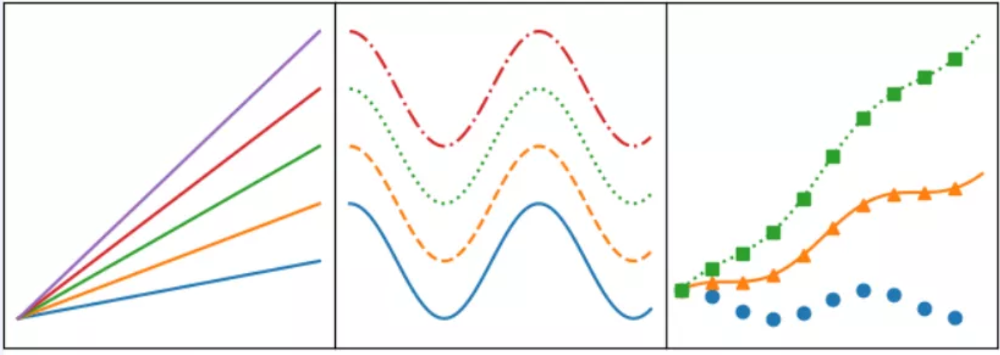

6 matplotlib折线图¶
模块名称：example_utils.py，里面包括三个函数，各自功能如下：
import matplotlib.pyplot as plt
# 创建画图fig和axes
def setup_axes():
fig, axes = plt.subplots(ncols=3, figsize=(6.5,3))
for ax in fig.axes:
ax.set(xticks=[], yticks=[])
fig.subplots_adjust(wspace=0, left=0, right=0.93)
return fig, axes
# 图片标题
def title(fig, text, y=0.9):
fig.suptitle(text, size=14, y=y, weight='semibold', x=0.98, ha='right',
bbox=dict(boxstyle='round', fc='floralwhite', ec='#8B7E66',
lw=2))
# 为数据添加文本注释
def label(ax, text, y=0):
ax.annotate(text, xy=(0.5, 0.00), xycoords='axes fraction', ha='center',
style='italic',
bbox=dict(boxstyle='round', facecolor='floralwhite',
ec='#8B7E66'))

import numpy as np
import matplotlib.pyplot as plt
import example_utils
x = np.linspace(0, 10, 100)
fig, axes = example_utils.setup_axes()
for ax in axes:
ax.margins(y=0.10)
# 子图1 默认plot多条线，颜色系统分配
for i in range(1, 6):
axes[0].plot(x, i * x)
# 子图2 展示线的不同linestyle
for i, ls in enumerate(['-', '--', ':', '-.']):
axes[1].plot(x, np.cos(x) + i, linestyle=ls)
# 子图3 展示线的不同linestyle和marker
for i, (ls, mk) in enumerate(zip(['', '-', ':'], ['o', '^', 's'])):
axes[2].plot(x, np.cos(x) + i * x, linestyle=ls, marker=mk, markevery=10)
# 设置标题
# example_utils.title(fig, '"ax.plot(x, y, ...)": Lines and/or markers', y=0.95)
# 保存图片
fig.savefig('plot_example.png', facecolor='none')
# 展示图片
plt.show()